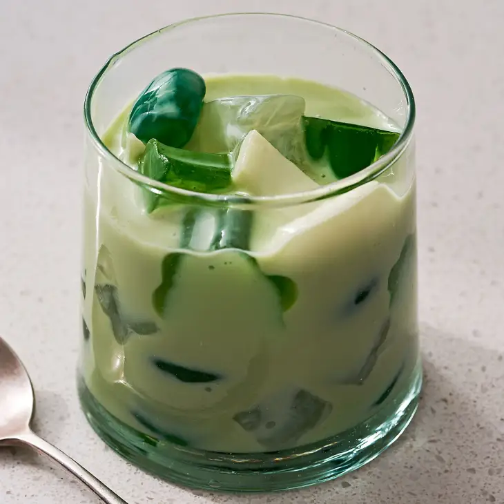

Odin Recipes
Buko Pandan

Description
Link to Original Recipe
Ingredients
- Buko, or young coconut, although very delicious fresh, can be difficult to find in stores (not to mention open without a giant cleaver). I opt for canned meat in this recipe for the sake of convenience.
- Pandan, or screwpine leaf, gives the jelly an earthy vanilla flavor.
- Gulaman, also known as agar-agar, can come in powdered or bar form. It’s a traditional ingredient in the jelly. (The word gulaman can refer to the jelly dessert itself too!) Gulaman is a seaweed-based alternative to gelatin.
- Table cream is a rich type of canned cream with 18 to 30% percent milk fat. Mixed with sweetened condensed milk, it coats all of the jellies in a thick, velvety sauce.
- Nata de coco is coconut gel, which are translucent, sweet, and chewy cubes made from fermenting coconut water.
- Kaong are sugar palm fruit that are oval-like and also chewy. Besides the white variety, you can find them in different colors like red and green. Both nata de coco and kaong are commonly found in Filipino grocery stores stored in jars filled with syrup.
Steps
- Let 1 frozen pandan leaf sit at room temperature until thawed, then tie into a knot.
-
Coat an 8x8-inch square metal pan with cooking spray. Line it with parchment paper along the bottom and over two opposite sides to create a sling.
Gently wipe off any excess spray on the sides of the pan with a paper towel. (Alternatively, use a glass or ceramic 8x8-inch square pan, no need to coat with cooking spray or line with parchment.)
-
Make the gulaman (jelly): Place the pandan knot, 1 1/2 cups coconut water, 1/2 cup granulated sugar, and 1 teaspoon agar-agar powder in a small saucepan.
Cook over medium heat, stirring frequently with a heatproof spatula, until the mixture starts to boil and the agar-agar and sugar are dissolved 5 to 6 minutes.
Continue to boil for 2 minutes more. Add 1 to 2 drops of green gel food coloring and stir to combine. Remove the saucepan from the heat. Discard the pandan leaf.
- Immediately pour the mixture into the pan. Place the pan on a wire rack and let cool to room temperature, about 20 minutes.
- Refrigerate uncovered until completely chilled, about 1 hour.
Grasping the excess parchment paper, pull the gulaman slab out of the pan and place on a cutting board. Cut into flower shapes with a 1-inch flower cookie cutter or into 1/2-inch squares. (If you used a glass pan, just cut directly in the pan.)
-
Place 1 (14-ounce) can sweetened condensed milk, 1 (7.6-ounce) can table cream or 1 cup light cream, 1/4 teaspoon kosher salt, and 1/4 teaspoon pandan extract in a large bowl and whisk until smooth.
(If your extract is not green, you can add a few drops green gel food coloring to this mixture if you would like it to be green.) Add the gulaman and stir to combine.
-
Place a large colander set in the sink. Pour the contents of 1 (12-ounce) jar nata de coco in syrup, 1 (12-ounce) jar kaong in syrup, and 1 (20-ounce) can young coconut meat in syrup into the colander to drain.
Cut the young coconut meat into bite-sized pieces with kitchen shears.
- Transfer the contents of the colander to the bowl with the gulaman. Gently fold together with a flexible spatula until combined. Cover and refrigerate for at least 2 hours. Serve cold.